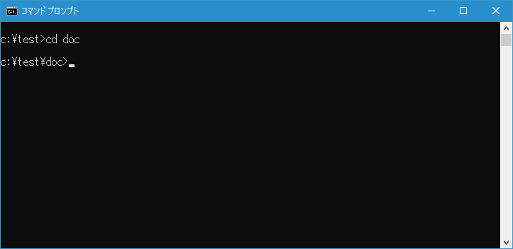
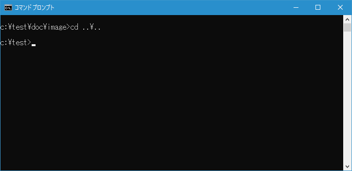
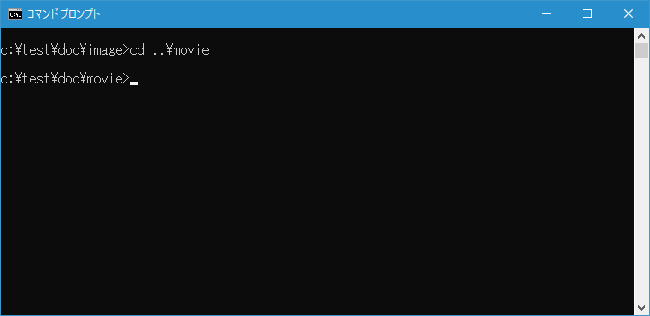
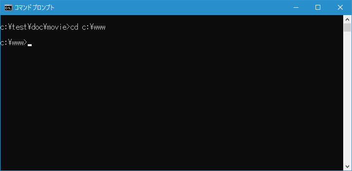
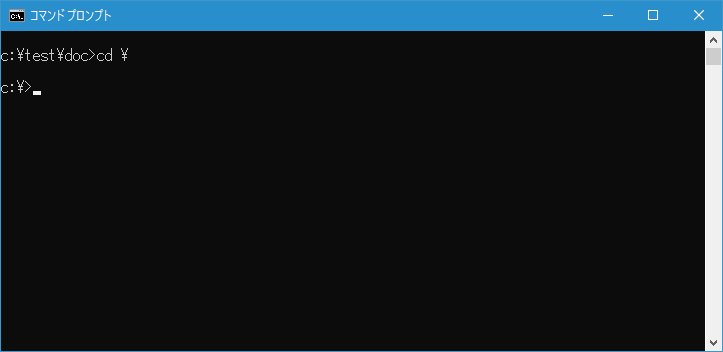
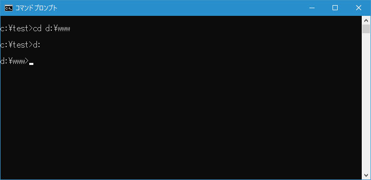

カレントディレクトリの変更(CD, CHDIR)
カレントディレクトリを別のディレクトリへ変更することができる CD コマンドの使い方について解説します。なお CD コマンドはカレントディレクトリの表示でも使います。
CDコマンドの使い方(ディレクトリの変更)
CD コマンドを実行するとカレントディレクトリを変更することができます。書式は次の通りです。
CD [/D] [ドライブ:][パス]
CD コマンドの引数として変更したいパスを指定します。パスは相対パスでも絶対パスでも指定できます。
なお CHDIR コマンドを使っても同じ結果となります。
CHDIR [/D] [ドライブ:][パス]
相対パスでの指定
相対パスで指定する場合、カレントディレクトリの位置を基本としてどう変更するのかを指定します。例えばカレントディレクトリが c:\test の時にディレクトリ内にある c:\test\doc ディレクトリへ変更するには次のように実行します。
cd doc

階層の深いディレクトリへ移動することもできます。例えばカレントディレクトリが c:\test の時に c:\test\doc\image ディレクトリへ変更するには次のように実行します。
cd doc\image
相対パスでの指定で「..」は1つ上の階層を表します。さらに上の階層を指定するには「..\..」のように使用します。例えばカレントディレクトリが c:\test\doc\image の時に2つ階層が上の c:\test ディレクトリへ変更するには次のように実行します。
cd ..\..

「..」はディレクトリの指定を組み合わせても利用できます。例えばカレントディレクトリが c:\test\doc\image の時に1つ階層が上のディレクトリにある別のディレクトリである c:\doc\movie ディレクトリへ変更するには次のように実行します。
cd ..\movie

絶対パスでの指定
絶対パスで指定する場合はカレントディレクトリの位置に関係なくルートディレクトリからのパスを指定します。例えば c:\www ディレクトリへ変更するには次のように実行します。
cd c:\www

現在のカレントディレクトリのルートディレクトリへ変更する場合は次のように実行することもできます。
cd \

この記述の仕方を利用して、例えば c:\www ディレクトリへ変更するには次のように入力します。
cd \www

別のドライブにあるディレクトリへ変更する
変更先のディレクトリを指定する時に、別のドライブのディレクトリを指定すると単にそのドライブのカレントディレクトリが変更になるだけで変更はされません。例えば次のように実行した場合で試してみます。
cd d:\www
カレントディレクトリは変わっていません。先ほどのコマンドではDドライブのカレントディレクトリは変更されていますが、カレントドライブの変更は行わないためです。カレントドライブを変更するには次のように実行します。
cd d:\www
d:

別のドライブにあるカレントディレクトリへ一度のコマンドで変更するには「/d」オプションを付けて実行します。
cd /d d:\www

カレントディレクトリの変更とカレントドライブの変更を同時に行うことができました。
-- --
CD コマンドを使ってカレントディレクトリを変更する方法について解説しました。
( Written by Tatsuo Ikura )

著者 / TATSUO IKURA
初心者～中級者の方を対象としたプログラミング方法や開発環境の構築の解説を行うサイトの運営を行っています。